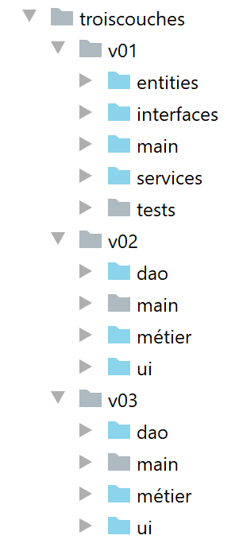
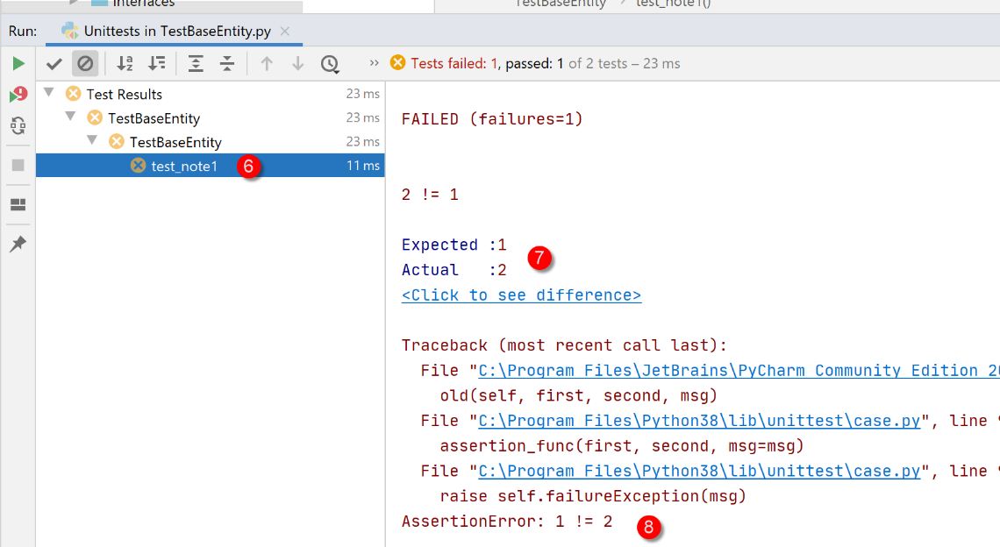
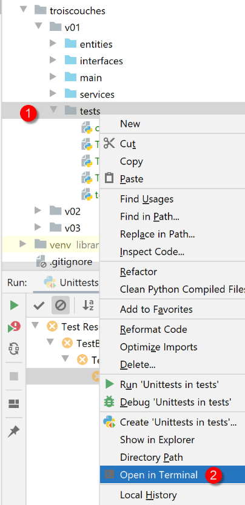
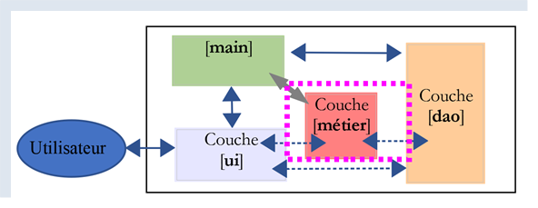

14. Arquitectura en capas y programación por interfaces
14.1. Introducción
Nos proponemos escribir una aplicación que permita mostrar las calificaciones de los alumnos de una escuela secundaria. Esta aplicación puede tener una arquitectura multicapa:

- la capa [ui] (Interfaz de usuario) es la capa que interactúa con el usuario de la aplicación;
- La capa [métier] implementa las reglas de gestión de la aplicación, como el cálculo de un salario o de una factura. Esta capa utiliza datos proporcionados por el usuario a través de la capa [présentation] y de la capa SGBD a través de la capa [dao];
- la capa [dao] (Objetos de Acceso a Datos) gestiona el acceso a los datos de la capa SGBD (Sistema de Gestión de Bases de Datos).
Esta es la arquitectura que se utilizó en el |curso sobre Python 2|. También se puede introducir una variante:

Las diferencias con respecto a la estructura en capas anterior son las siguientes:
- un script principal llamado [main], mencionado anteriormente, organiza la instanciación de las capas;
- las capas [ui, métier, dao] ya no se comunican necesariamente entre sí. Si deben hacerlo, el script [main] les proporciona las referencias de las capas que necesitan;
El código está organizado aquí en centros de competencia con un director de orquesta:
- el «director de orquesta» es el script principal [main];
- las capas [ui], [dao] y [métier] son los centros de competencia;
A esta organización se le podría llamar una organización orquestal.
14.2. Ejemplo 1
Vamos a ilustrar la arquitectura en capas con una aplicación de consola sencilla:
- no habrá base de datos;
- la capa [dao] administrará las entidades Elève, Classe, Matière y Note, lo que permitirá gestionar las calificaciones de los alumnos;
- la capa [métier] permitirá calcular indicadores sobre las calificaciones de un alumno específico;
- la capa [ui] será una aplicación de consola que mostrará los resultados de los alumnos;
El proyecto PyCharm de la aplicación es el siguiente:
 |
Nota: las carpetas en azul forman parte de [Sources Root] del proyecto PyCharm.
14.2.1. Las entidades de la aplicación
Llamaremos «entidades» a las clases cuya única función es encapsular datos. Para ello, se podrían utilizar diccionarios. La ventaja de la clase es que permite verificar la validez de los datos almacenados en el objeto y proporcionar un método que devuelva la identidad del objeto en forma de cadena de caracteres.
 |
14.2.1.1. La entidad [Classe]
La entidad [Classe] (Classe.py) representa una clase de la escuela secundaria:
# importaciones
from BaseEntity import BaseEntity
from MyException import MyException
from Utils import Utils
class Classe(BaseEntity):
# atributos excluidos del estado de la clase
excluded_keys = []
# propiedades de la clase
@staticmethod
def get_allowed_keys() -> list:
# id: identificador de la clase
# nombre: nombre de la clase
return BaseEntity.get_allowed_keys() + ["nom"]
# getter
@property
def nom(self: object) -> str:
return self.__nom
# setters
@nom.setter
def nom(self: object, nom: str):
# nombre debe ser una cadena de caracteres no vacía
if Utils.is_string_ok(nom):
self.__nom = nom
else:
raise MyException(11, f"Le nom de la classe {self.id} doit être une chaîne de caractères non vide")
Notas
- línea 7: la entidad [Classe] se deriva de la entidad [BaseEntity] analizada en el párrafo |La clase BaseEntity|;
- líneas 11-16: una clase se define mediante un n.º id y un nom (línea 16). La propiedad [id] la proporciona la clase [BaseEntity] y el nombre, la clase [Classe];
- líneas 18-30: getter/setter del atributo [nom];
14.2.1.2. La entidad [Matière]
La clase [Matière] (matière.py) es la siguiente:
# importaciones
from BaseEntity import BaseEntity
from MyException import MyException
from Utils import Utils
class Matière(BaseEntity):
# atributos excluidos del estado de la clase
excluded_keys = []
# propiedades de la clase
@staticmethod
def get_allowed_keys() -> list:
# id: identificador de la materia
# nombre: nombre de la materia
# coeficiente: coeficiente de la materia
return BaseEntity.get_allowed_keys() + ["nom", "coefficient"]
# getter
@property
def nom(self: object) -> str:
return self.__nom
@property
def coefficient(self: object) -> float:
return self.__coefficient
# setters
@nom.setter
def nom(self: object, nom: str):
# el nombre debe ser una cadena de caracteres no vacía
if Utils.is_string_ok(nom):
self.__nom = nom
else:
raise MyException(21, f"Le nom de la matière {self.id} doit être une chaîne de caractères non vide")
@coefficient.setter
def coefficient(self, coefficient: float):
# el coeficiente debe ser un número real >=0
erreur = False
if isinstance(coefficient, (int, float)):
if coefficient >= 0:
self.__coefficient = coefficient
else:
erreur = True
else:
erreur = True
# ¿Error?
if erreur:
raise MyException(22, f"Le coefficient de la matière {self.nom} doit être un réel >=0")
Notas
- línea 7: la clase [Classe] deriva de la clase [BaseEntity];
- líneas 11-17: una materia se define por su n.º [id], su nombre [nom] y su coeficiente [coefficient];
- líneas 19-50: métodos getter y setter de los atributos de la clase;
14.2.1.3. La entidad [Elève]
La clase [Elève] (élève.py) es la siguiente:
# importaciones
from BaseEntity import BaseEntity
from Classe import Classe
from MyException import MyException
from Utils import Utils
class Elève(BaseEntity):
# atributos excluidos del estado de la clase
excluded_keys = []
# propiedades de la clase
@staticmethod
def get_allowed_keys() -> list:
# id: identificador del alumno
# apellido: apellido del alumno
# nombre: nombre del alumno
# clase: clase del alumno
return BaseEntity.get_allowed_keys() + ["nom", "prénom", "classe"]
# getters
@property
def nom(self: object) -> str:
return self.__nom
@property
def prénom(self: object) -> str:
return self.__prénom
@property
def classe(self: object) -> Classe:
return self.__classe
# setters
@nom.setter
def nom(self: object, nom: str) -> str:
# el apellido debe ser una cadena de caracteres no vacía
if Utils.is_string_ok(nom):
self.__nom = nom
else:
raise MyException(41, f"Le nom de l'élève {self.id} doit être une chaîne de caractères non vide")
@prénom.setter
def prénom(self: object, prénom: str) -> str:
# el nombre debe ser una cadena de caracteres no vacía
if Utils.is_string_ok(prénom):
self.__prénom = prénom
else:
raise MyException(42, f"Le prénom de l'élève {self.id} doit être une chaîne de caractères non vide")
@classe.setter
def classe(self: object, value):
try:
# se espera un tipo Clase
if isinstance(value, Classe):
self.__classe = value
# o un tipo «dict»
elif isinstance(value,dict):
self.__classe=Classe().fromdict(value)
# o un tipo json
elif isinstance(value,str):
self.__classe = Classe().fromjson(value)
except BaseException as erreur:
raise MyException(43, f"L'attribut [{value}] de l'élève {self.id} doit être de type Classe ou dict ou json. Erreur : {erreur}")
Notas
- línea 9: la clase [Elève] deriva de la clase [BaseEntity];
- líneas 13-20: un alumno se identifica por su n.º [id], su apellido [nom], su nombre [prénom] y su clase [classe]. Este último parámetro es una referencia a un objeto [Classe];
- líneas 22-65: getters / setters de los atributos de la clase;
14.2.1.4. La entidad [Note]
La clase [Note] (note.py) es la siguiente:
# importaciones
from BaseEntity import BaseEntity
from Elève import Elève
from Matière import Matière
from MyException import MyException
class Note(BaseEntity):
# atributos excluidos del estado de la clase
excluded_keys = []
# propiedades de la clase
@staticmethod
def get_allowed_keys() -> list:
# id: identificador de la nota
# valor: la calificación en sí
# alumno: alumno (del tipo Alumno) al que se refiere la nota
# materia: materia (de tipo Materia) a la que corresponde la nota
# el objeto «Calificación» es, por lo tanto, la calificación de un alumno en una materia
return BaseEntity.get_allowed_keys() + ["valeur", "élève", "matière"]
# getters
@property
def valeur(self: object) -> float:
return self.__valeur
@property
def élève(self: object) -> Elève:
return self.__élève
@property
def matière(self: object) -> Matière:
return self.__matière
# getter
@valeur.setter
def valeur(self: object, valeur: float):
# la nota debe ser un número real entre 0 y 20
if isinstance(valeur, (int, float)) and 0 <= valeur <= 20:
self.__valeur = valeur
else:
raise MyException(31,
f"L'attribut {valeur} de la note {self.id} doit être un nombre dans l'intervalle [0,20]")
@élève.setter
def élève(self: object, value):
try:
# se espera un tipo «Alumno»
if isinstance(value, Elève):
self.__élève = value
# o un tipo «dict»
elif isinstance(value, dict):
self.__élève = Elève().fromdict(value)
# o un tipo json
elif isinstance(value, str):
self.__élève = Elève().fromjson(value)
except BaseException as erreur:
raise MyException(32,
f"L'attribut [{value}] de la note {self.id} doit être de type Elève ou dict ou json. Erreur : {erreur}")
@matière.setter
def matière(self: object, value):
try:
# se espera un tipo «Matière»
if isinstance(value, Matière):
self.__matière = value
# o un tipo «dict»
elif isinstance(value, dict):
self.__matière = Matière().fromdict(value)
# o un tipo json
elif isinstance(value, str):
self.__matière = Matière().fromjson(value)
except BaseException as erreur:
raise MyException(33,
f"L'attribut [{value}] de la note {self.id} doit être de type Matière ou dict ou json. Erreur : {erreur}")
Notas
- línea 8: la clase [Note] deriva de la clase [BaseEntity];
- líneas 12-20: un objeto [Note] se caracteriza por su n.º [id], el valor de la calificación [valeur], una referencia [élève] al estudiante que tiene esta calificación, una referencia a la materia [matière] objeto de la calificación;
- líneas 22-75: getters / setters de los atributos de la clase;
14.2.2. Configuración de la aplicación
 |
El archivo [config.py] configura el entorno del script principal [main] (1), así como el de las pruebas (2). Todos estos scripts tienen una instrucción [import config] al inicio del código. Cabe recordar que la carpeta que contiene el script objeto del comando [python script] forma parte automáticamente del Python Path.Si; por lo tanto, dado que [config] se encuentra en la misma carpeta que los scripts que tienen la instrucción [import config], se encontrará. Los archivos [1] y [2] son idénticos en este caso. Sin embargo, podría no ser así.
El archivo [config.sys] es el siguiente:
def configure():
import os
# ruta absoluta de la carpeta de este script
script_dir = os.path.dirname(os.path.abspath(__file__))
# root_dir
root_dir="C:/Data/st-2020/dev/python/cours-2020/python3-flask-2020/classes"
# dependencias absolutas
absolute_dependencies=[
# las carpetas locales que contienen clases e interfaces
f"{root_dir}/02/entities",
f"{script_dir}/../entities",
f"{script_dir}/../interfaces",
f"{script_dir}/../services",
]
# actualización de syspath
from myutils import set_syspath
set_syspath(absolute_dependencies)
# se aplica la configuración
return {}
- líneas 11-14: las carpetas que deben formar parte de la ruta de Python (sys.path);
- la carpeta [f"{root_dir}/02/entities"] da acceso a las clases [BaseEntity] y [MyException];
- La carpeta [f"{script_dir}/../entities"] da acceso a las clases [Elève], [Classe], [Matière] y [Note];
- la carpeta [f"{script_dir}/../interfaces",] da acceso a las interfaces de la aplicación;
- la carpeta [f"{script_dir}/../services"] da acceso a las clases que implementan las interfaces;
14.2.3. Pruebas de entidades
 |
Aquí escribiremos pruebas que se ejecutan mediante una herramienta llamada [unittest]. PyCharm incluye varios marcos de pruebas. La elección de uno de ellos se realiza en la configuración de PyCharm:

- En [4], hay varios marcos de pruebas disponibles:

14.2.3.1. La clase de pruebas [TestBaseEntity]
El script de prueba [TestBaseEntity] será el siguiente:
import unittest
# se configura la aplicación
import config
config = config.configure()
class TestBaseEntity (unittest.TestCase):
def test_note1(self):
# importaciones
from Note import Note
from Elève import Elève
from Classe import Classe
from Matière import Matière
# creación de una nota a partir de una cadena jSON
note = Note().fromjson(
'{"id": 8, "valor": 12, "alumno": {"id": 42, "apellido": "apellido4", "nombre": "nombre4", "clase": {"id": 2, "nombre": "clase2"}}, "materia": {"id": 2, "nombre": "materia2", "coeficiente": 2}}')
# verificaciones
self.assertIsInstance(note, Note)
self.assertIsInstance(note.élève, Elève)
self.assertIsInstance(note.élève.classe, Classe)
self.assertIsInstance(note.matière, Matière)
def test_note2(self):
# importaciones
from Note import Note
from Elève import Elève
from Classe import Classe
from Matière import Matière
# construcción de una nota a partir de un diccionario
note = Note().fromdict(
{"id": 8, "valeur": 12, "élève": {"id": 42, "nom": "nom4", "prénom": "prénom4",
"classe": {"id": 2, "nom": "classe2"}},
"matière": {"id": 2, "nom": "matière2", "coefficient": 2}})
# verificaciones
self.assertIsInstance(note, Note)
self.assertIsInstance(note.élève, Elève)
self.assertIsInstance(note.élève.classe, Classe)
self.assertIsInstance(note.matière, Matière)
if __name__ == '__main__':
unittest.main()
Notas
- línea 1: se importa el módulo [unittest], que proporcionará los distintos métodos de prueba;
- líneas 3-6: se configura la aplicación para que se encuentren las clases necesarias para las pruebas;
- línea 9: una clase de prueba [unittest] debe extender la clase [unittest.TestCase];
- líneas 11, 27: las funciones de prueba deben tener un nombre que comience con [test]; de lo contrario, no serán reconocidas;
- líneas 13-16: se importan las clases que se necesitan;
- en esta clase de prueba, queremos verificar el comportamiento de los métodos [BaseEntity.fromdict] (línea 34) y [BaseEntity.fromjson] (línea 18). La clase [Note] tiene propiedades que son referencias a otras clases. Queremos verificar que los dos métodos anteriores creen objetos [Note] válidos;
- línea 18: se crea un objeto [Note] a partir de un objeto jSON;
- línea 21: se verifica que el objeto creado sea efectivamente de tipo [Note]. El método [assertIsInstance] es un método de la clase [unittest.TestCase], clase padre de la clase [TestBaseEntity];
- línea 22: se verifica que [note.élève] sea efectivamente de tipo [Elève];
- línea 23: se verifica que [note.élève.classe] sea efectivamente del tipo [Classe];
- línea 24: se verifica que [note.matière] sea efectivamente del tipo [Matière];
- líneas 33-42: se hace lo mismo con el método [BaseEntity.fromdict];
Hay varias formas de ejecutar las pruebas:
 |
- en [1-2], se ejecuta [TestBaseEntity] con el marco [UnitTest];
- en [3-5], las pruebas fallan. [UnitTests] indica que no encontró ninguna prueba que ejecutar;
El fracaso de las pruebas se debe a la organización del código de [TestBaseEntity]:
import unittest
# se configura la aplicación
import config
config = config.configure()
class TestBaseEntity(unittest.TestCase):
Lo que afecta al marco de trabajo [UnitTest] es la presencia de código ejecutable, en las líneas 3 a 6, antes de la definición de la clase de prueba, en la línea 9.
Por lo tanto, reorganizamos el código de la siguiente manera:
import unittest
class TestBaseEntity(unittest.TestCase):
def setUp(self):
# se configura la aplicación
import config
config.configure()
def test_note1(self):
…
def test_note2(self):
…
if __name__ == '__main__':
unittest.main()
- líneas 6-10: se define una función [setUp]. Esta función tiene una función especial: se ejecuta antes de cada función de prueba (test_note1, test_note2);
Una vez hecho esto, la ejecución de la clase [TestBaseEntity] arroja los siguientes resultados:
 |
En esta ocasión, se ejecutaron los dos métodos de prueba y las pruebas se completaron con éxito.
Veamos qué sucede cuando una prueba falla. Modifiquemos el código de [test_note1] de la siguiente manera:
def test_note1(self):
# error intencional: se verifica que 1==2
self.assertEqual(1,2)
# importaciones
from Note import Note
…
- línea 2: se verifica que 1==2;
Los resultados de la ejecución son entonces los siguientes:
 |
Podemos conocer la causa del error haciendo clic en la prueba fallida [2]:
 |
- en [7-8], la causa del error;
Otra forma de ejecutar una clase de pruebas es hacerlo en un terminal:
 |
(venv) C:\Data\st-2020\dev\python\cours-2020\python3-flask-2020\troiscouches\v01\tests>python -m unittest TestBaseEntity.py
..
----------------------------------------------------------------------
Ran 2 tests in 0.026s
OK
La línea 6 indica que ambas pruebas se han ejecutado correctamente (se ha eliminado el error 1==2);
Por último, una tercera forma de ejecutar la clase de pruebas [TestBaseEntity], también en un terminal, es la siguiente. Terminamos la clase de pruebas con las siguientes líneas 6 y 7;
…
self.assertIsInstance(note.élève.classe, Classe)
self.assertIsInstance(note.matière, Matière)
if __name__ == '__main__':
unittest.main()
- línea 6: la variable [__name__] es el nombre que se le da al script que se ejecuta. Cuando el script es el que se inicia mediante el comando [python script.py], la variable [__name__] toma el valor [__main__] (dos caracteres subrayados antes y después del identificador). Por lo tanto, la línea 7 solo se ejecuta cuando el script [TestBaseEntity] es iniciado por el comando [python TestBaseEntity.py]. La instrucción [unittest.main()] inicia la ejecución del script mediante el marco [UnitTest]. A continuación se muestra un ejemplo:
(venv) C:\Data\st-2020\dev\python\cours-2020\python3-flask-2020\troiscouches\v01\tests>python TestBaseEntity.py
..
----------------------------------------------------------------------
Ran 2 tests in 0.013s
OK
14.2.3.2. La clase de pruebas [TestEntités]
La clase de pruebas [TestEntités] es la siguiente:
import unittest
class TestEntités(unittest.TestCase):
def setUp(self):
# se configura la aplicación
import config
config.configure()
def test_code1a(self):
# importaciones
from Elève import Elève
from MyException import MyException
# código de error
code = None
try:
# ID no válido
Elève().fromdict({"id": "x", "nom": "y", "prénom": "z", "classe": "t"})
except MyException as ex:
print(f"\ncode erreur={ex.code}, message={ex}")
code = ex.code
# verificación
self.assertEqual(code, 1)
def test_code41(self):
# importaciones
from Elève import Elève
from MyException import MyException
# código de error
code = None
try:
# nombre no válido
Elève().fromdict({"id": 1, "nom": "", "prénom": "z", "classe": "t"})
except MyException as ex:
print(f"\ncode erreur={ex.code}, message={ex}")
code = ex.code
# verificación
self.assertEqual(code, 41)
def test_code42(self):
# importaciones
from Elève import Elève
from MyException import MyException
# código de error
code = None
try:
# nombre no válido
Elève().fromdict({"id": 1, "nom": "y", "prénom": "", "classe": "t"})
except MyException as ex:
print(f"\ncode erreur={ex.code}, message={ex}")
code = ex.code
# verificación
self.assertEqual(code, 42)
def test_code43(self):
# importaciones
from Elève import Elève
from MyException import MyException
# código de error
code = None
try:
# clase no válida
Elève().fromdict({"id": 1, "nom": "y", "prénom": "z", "classe": "t"})
except MyException as ex:
print(f"\ncode erreur={ex.code}, message={ex}")
code = ex.code
# verificación
self.assertEqual(code, 43)
def test_code1b(self):
# importaciones
from Classe import Classe
from MyException import MyException
# código de error
code = None
try:
# identificador no válido
Classe().fromdict({"id": "x", "nom": "y"})
except MyException as ex:
print(f"\ncode erreur={ex.code}, message={ex}")
code = ex.code
# verificación
self.assertEqual(code, 1)
def test_code11(self):
# importaciones
from Classe import Classe
from MyException import MyException
# código de error
code = None
try:
# nombre no válido
Classe().fromdict({"id": 1, "nom": ""})
except MyException as ex:
code = ex.code
# verificación
self.assertEqual(code, 11)
def test_code1c(self):
# importaciones
from Matière import Matière
from MyException import MyException
# código de error
code = None
try:
# identificador no válido
Matière().fromdict({"id": "x", "nom": "y", "coefficient": "t"})
except MyException as ex:
print(f"\ncode erreur={ex.code}, message={ex}")
code = ex.code
# verificación
self.assertEqual(code, 1)
def test_code21(self):
# importaciones
from Matière import Matière
from MyException import MyException
# código de error
code = None
try:
# nombre no válido
Matière().fromdict({"id": "1", "nom": "", "coefficient": "t"})
except MyException as ex:
print(f"\ncode erreur={ex.code}, message={ex}")
code = ex.code
# verificación
self.assertEqual(code, 21)
def test_code22(self):
# importaciones
from Matière import Matière
from MyException import MyException
# código de error
code = None
try:
# coeficiente no válido
Matière().fromdict({"id": 1, "nom": "y", "coefficient": "t"})
except MyException as ex:
print(f"\ncode erreur={ex.code}, message={ex}")
code = ex.code
# verificación
self.assertEqual(code, 22)
def test_code1d(self):
# importaciones
from Note import Note
from MyException import MyException
# código de error
code = None
try:
# identificador no válido
Note().fromdict({"id": "x", "valeur": "x", "élève": "y", "matière": "z"})
except MyException as ex:
print(f"\ncode erreur={ex.code}, message={ex}")
code = ex.code
# verificación
self.assertEqual(code, 1)
def test_code31(self):
# importaciones
from Note import Note
from MyException import MyException
# código de error
code = None
try:
# valor no válido
Note().fromdict({"id": 1, "valeur": "x", "élève": "y", "matière": "z"})
except MyException as ex:
print(f"\ncode erreur={ex.code}, message={ex}")
code = ex.code
# verificación
self.assertEqual(code, 31)
def test_code32(self):
# importaciones
from Note import Note
from MyException import MyException
# código de error
code = None
try:
# estudiante no válido
Note().fromdict({"id": 1, "valeur": 10, "élève": "y", "matière": "z"})
except MyException as ex:
print(f"\ncode erreur={ex.code}, message={ex}")
code = ex.code
# verificación
self.assertEqual(code, 32)
def test_code33(self):
# importaciones
from Elève import Elève
from Note import Note
from Classe import Classe
from MyException import MyException
# código de error
code = None
try:
# materia no válida
classe = Classe().fromdict({"id": 1, "nom": "x"})
élève = Elève().fromdict({"id": 1, "nom": "a", "prénom": "b", "classe": classe})
Note().fromdict({"id": 1, "valeur": 10, "élève": élève, "matière": "z"})
except MyException as ex:
print(f"\ncode erreur={ex.code}, message={ex}")
code = ex.code
# verificación
self.assertEqual(code, 33)
def test_exception(self):
# importaciones
from Elève import Elève
# la prueba debe ejecutar el tipo [MyException] para tener éxito
from MyException import MyException
with self.assertRaises(MyException):
# la prueba
Elève().fromdict({"id": "x", "nom": "y", "prénom": "z", "classe": "t"})
if __name__ == '__main__':
unittest.main()
- El propósito del script de prueba es probar los setters de las clases: verificar que no se puedan asignar valores incorrectos a los atributos de las diferentes entidades;
- líneas 11-24: se comprueba que no se pueda asignar un identificador inválido a un alumno. Como se asigna el valor «x», en la línea 16, como identificador del alumno, se espera que se produzca una excepción. Por lo tanto, se debería pasar a las líneas 20-22;
- línea 21: se muestra el mensaje de error;
- línea 22: se recupera el código de error (véase el párrafo |La entidad MyException|);
- línea 24: se verifica (assert) que el código de error sea 1. Aquí se verifican dos cosas:
- que efectivamente hubo un error;
- que el código de error sea 1;
- este proceso se repite con las funciones de las líneas 24 a 213;
- líneas 215-222: se comprueba que una acción genere una excepción de cierto tipo;
- línea 220: se indica que la prueba es exitosa si lanza una excepción de tipo [MyException];
Resultados
Se ejecuta el script de prueba:
 |
Los resultados obtenidos son los siguientes:
Testing started at 09:39 ...
C:\Data\st-2020\dev\python\cours-2020\python3-flask-2020\venv\Scripts\python.exe "C:\Program Files\JetBrains\PyCharm Community Edition 2020.1.2\plugins\python-ce\helpers\pycharm\_jb_unittest_runner.py" --path C:/Data/st-2020/dev/python/cours-2020/python3-flask-2020/troiscouches/v01/tests/TestEntités.py
Launching unittests with arguments python -m unittest C:/Data/st-2020/dev/python/cours-2020/python3-flask-2020/troiscouches/v01/tests/TestEntités.py in C:\Data\st-2020\dev\python\cours-2020\python3-flask-2020\troiscouches\v01\tests
code erreur=1, message=MyException[1, L'identifiant d'une entité <class 'Elève.Elève'> doit être un entier >=0]
code erreur=1, message=MyException[1, L'identifiant d'une entité <class 'Classe.Classe'> doit être un entier >=0]
code erreur=1, message=MyException[1, L'identifiant d'une entité <class 'Matière.Matière'> doit être un entier >=0]
code erreur=1, message=MyException[1, L'identifiant d'une entité <class 'Note.Note'> doit être un entier >=0]
code erreur=21, message=MyException[21, Le nom de la matière 1 doit être une chaîne de caractères non vide]
code erreur=22, message=MyException[22, Le coefficient de la matière y doit être un réel >=0]
code erreur=31, message=MyException[31, L'attribut x de la note 1 doit être un nombre dans l'intervalle [0,20]]
code erreur=32, message=MyException[32, L'attribut [y] de la note 1 doit être de type Elève ou dict ou json. Erreur : Expecting value: line 1 column 1 (char 0)]
code erreur=33, message=MyException[33, L'attribut [z] de la note 1 doit être de type Matière ou dict ou json. Erreur : Expecting value: line 1 column 1 (char 0)]
code erreur=41, message=MyException[41, Le nom de l'élève 1 doit être une chaîne de caractères non vide]
code erreur=42, message=MyException[42, Le prénom de l'élève 1 doit être une chaîne de caractères non vide]
code erreur=43, message=MyException[43, L'attribut [t] de l'élève 1 doit être de type Classe ou dict ou json. Erreur : Expecting value: line 1 column 1 (char 0)]
Ran 14 tests in 0.040s
OK
Process finished with exit code 0
En este caso, todas las pruebas se han realizado con éxito
14.2.4. La capa [dao]

La capa [dao] implementa la interfaz [InterfaceDao] [1]. Esta es implementada por la clase [Dao] (2). El script [tests_dao] (3) prueba los métodos de la capa [dao].
14.2.4.1. Interfaz [InterfaceDao]
Una interfaz es un contrato entre el código que llama y el código al que se llama. Es el código al que se llama el que ofrece la interfaz:
 |
- El código llamante [1] desconoce la implementación del código llamado [3]. Solo sabe cómo llamarlo. Es la interfaz [2] la que se lo indica. Esta define una serie de métodos o funciones que se deben utilizar para interactuar con el código llamado. A esta interfaz también se le conoce como API (Interfaz de Programación de Aplicaciones);
La capa [dao] ofrecerá la siguiente interfaz:
- [get_classes] devuelve la lista de clases de la escuela secundaria;
- [get_matières] devuelve la lista de materias que se imparten en la escuela secundaria;
- [get_élèves] muestra la lista de alumnos de la escuela secundaria;
- [get_notes] muestra la lista de calificaciones de todos los alumnos;
- [get_notes_for_élève_by_id] muestra las calificaciones de un alumno en particular;
- [get_élève_by_id] devuelve a un alumno identificado por su número;
El código que realiza la llamada solo utilizará estos métodos. No necesita saber cómo están implementados. Los datos pueden provenir de diferentes fuentes (almacenados en memoria, de una base de datos, de archivos de texto…) sin que ello afecte al código que realiza la llamada. A esto se le llama programación por interfaces.
Python 3 cuenta con un concepto similar al de interfaz: la clase abstracta. La utilizaremos. Agruparemos las interfaces de este ejemplo en la carpeta [interfaces].
Definimos una clase abstracta [InterfaceDao] (InterfaceDao.py) para la capa [dao]:
# importaciones
from abc import ABC, abstractmethod
# interfaz Dao
from Elève import Elève
class InterfaceDao(ABC):
# lista de clases
@abstractmethod
def get_classes(self: object) -> list:
pass
# lista de alumnos
@abstractmethod
def get_élèves(self: object) -> list:
pass
# lista de materias
@abstractmethod
def get_matières(self: object) -> list:
pass
# lista de calificaciones
@abstractmethod
def get_notes(self: object) -> list:
pass
# lista de calificaciones de un alumno
@abstractmethod
def get_notes_for_élève_by_id(self: object, élève_id: int) -> list:
pass
# buscar un alumno por su ID
@abstractmethod
def get_élève_by_id(self, élève_id: int) -> Elève:
pass
Notas:
- línea 2: ABC = Clase base abstracta. Se importan del módulo [abc] la clase ABC, así como el decorador [abstractmethod] utilizado en las líneas 10, 15, 20, 25, 30 y 35;
- línea 8: la clase abstracta se llama [InterfaceDao] y deriva de la clase [ABC];
- los métodos de la clase abstracta están decorados con el decorador [@abstractmethod], lo que convierte al método así decorado en un método abstracto: su código no está definido. Sin embargo, se le agrega código: la instrucción [pass], que no hace nada;
- la clase abstracta [InterfaceDao] no puede ser instanciada. Solo pueden ser instanciadas las clases derivadas de [InterfaceDao] que hayan implementado todos los métodos de [InterfaceDao]. Por lo tanto, si creamos dos clases, [Dao1] y [Dao2], derivadas de la clase [InterfaceDao], ambas implementarán los métodos abstractos de [InterfaceDao]. Por lo tanto, se podría decir que implementan la interfaz [InterfaceDao];
- los lenguajes que implementan tanto interfaces como clases abstractas le otorgan a la interfaz un papel diferente al de la clase abstracta. Una interfaz no tiene atributos y no puede ser instanciada. Una clase puede implementar una interfaz definiendo todos sus métodos;
14.2.4.2. Implementación de [Dao]
La clase [Dao] (dao.py) implementa la interfaz [InterfaceDao] de la siguiente manera:
# importación de entidades e interfaces
from Classe import Classe
from Elève import Elève
from InterfaceDao import InterfaceDao
from Matière import Matière
from MyException import MyException
from Note import Note
# La capa [dao] implementa la interfaz InterfaceDao
class Dao(InterfaceDao):
# constructor
# se construyen listas fijas
def __init__(self):
# se instancian las clases
classe1 = Classe().fromdict({"id": 1, "nom": "classe1"})
classe2 = Classe().fromdict({"id": 2, "nom": "classe2"})
self.classes = [classe1, classe2]
# las materias
matière1 = Matière().fromdict({"id": 1, "nom": "matière1", "coefficient": 1})
matière2 = Matière().fromdict({"id": 2, "nom": "matière2", "coefficient": 2})
self.matières = [matière1, matière2]
# los alumnos
élève11 = Elève().fromdict({"id": 11, "nom": "nom1", "prénom": "prénom1", "classe": classe1})
élève21 = Elève().fromdict({"id": 21, "nom": "nom2", "prénom": "prénom2", "classe": classe1})
élève32 = Elève().fromdict({"id": 32, "nom": "nom3", "prénom": "prénom3", "classe": classe2})
élève42 = Elève().fromdict({"id": 42, "nom": "nom4", "prénom": "prénom4", "classe": classe2})
self.élèves = [élève11, élève21, élève32, élève42]
# las calificaciones de los alumnos en las diferentes materias
note1 = Note().fromdict({"id": 1, "valeur": 10, "élève": élève11, "matière": matière1})
note2 = Note().fromdict({"id": 2, "valeur": 12, "élève": élève21, "matière": matière1})
note3 = Note().fromdict({"id": 3, "valeur": 14, "élève": élève32, "matière": matière1})
note4 = Note().fromdict({"id": 4, "valeur": 16, "élève": élève42, "matière": matière1})
note5 = Note().fromdict({"id": 5, "valeur": 6, "élève": élève11, "matière": matière2})
note6 = Note().fromdict({"id": 6, "valeur": 8, "élève": élève21, "matière": matière2})
note7 = Note().fromdict({"id": 7, "valeur": 10, "élève": élève32, "matière": matière2})
note8 = Note().fromdict({"id": 8, "valeur": 12, "élève": élève42, "matière": matière2})
self.notes = [note1, note2, note3, note4, note5, note6, note7, note8]
# -----------
# interfaz IDao
# -----------
Notas:
- líneas 1-7: se importan las entidades y la interfaz [InterfaceDao];
- línea 11: la clase [Dao] deriva de la clase abstracta [InterfaceDao]. Diremos que implementa la interfaz [InterfaceDao];
- línea 14: el constructor no tiene parámetros. Establece de manera fija cuatro listas:
- líneas 15-18: la lista de clases;
- líneas 19-22: la lista de materias;
- líneas 23-28: la lista de alumnos;
- líneas 29-38: la lista de calificaciones;
- líneas 40-44: implementación de los métodos de la interfaz [Interface Dao]. Aquí no los definimos para ver el mensaje de error que genera Python;
Un programa de prueba podría ser el siguiente: [tests-dao.py]:
# se configura la aplicación
import config
config = config.configure()
# instanciación de la capa [dao]
from Dao import Dao
daoImpl = Dao()
# lista de clases
for classe in daoImpl.get_classes():
print(classe)
# lista de materias
for matière in daoImpl.get_matières():
print(matière)
# lista de clases
for élève in daoImpl.get_élèves():
print(élève)
# lista de calificaciones
for note in daoImpl.get_notes():
print(note)
Nota: el script [tests-dao.py] no es una prueba de [unittest], ya que no contiene métodos cuyo nombre comience por [test_].
Los comentarios se explican por sí mismos. Las líneas 11 a 25 utilizan la interfaz de la capa [dao]. No hay suposiciones sobre la implementación real de la capa. En la línea 9, se instancia la capa [dao].
Los resultados de la ejecución de este script son los siguientes:
C:\Data\st-2020\dev\python\cours-2020\python3-flask-2020\venv\Scripts\python.exe C:/Data/st-2020/dev/python/cours-2020/python3-flask-2020/troiscouches/v01/tests/tests_dao.py
Traceback (most recent call last):
File "C:/Data/st-2020/dev/python/cours-2020/python3-flask-2020/troiscouches/v01/tests/tests_dao.py", line 9, in <module>
daoImpl = Dao()
TypeError: Can't instantiate abstract class Dao with abstract methods get_classes, get_matières, get_notes, get_notes_for_élève_by_id, get_élève_by_id, get_élèves
Process finished with exit code 1
Se observa que se produce un error al instanciar la clase [Dao] (línea 3 anterior). El intérprete de Python 3 nos indica que no puede instanciar la clase, ya que no hemos definido los métodos abstractos [get_classes, get_matières, get_notes, get_notes_for_élève_by_id, get_élève_by_id, get_élèves].
PyCharm también cuenta con el concepto de clase abstracta y nos sugiere definir sus métodos:
 |
- en [1], haz clic con el botón derecho sobre el código;
- en [2-3], elige [Generate / Implement Methods] para implementar los métodos que faltan de la clase [Dao];
- en [4], selecciona los métodos que deseas implementar; en este caso, todos;
Una vez hecho esto, la clase [Dao] se complementa con PyCharm de la siguiente manera:
# -----------
# interfaz IDao
# -----------
def get_classes(self: object) -> list:
pass
def get_élèves(self: object) -> list:
pass
def get_matières(self: object) -> list:
pass
def get_notes(self: object) -> list:
pass
def get_notes_for_élève_by_id(self: object, élève_id: int) -> list:
pass
def get_élève_by_id(self, élève_id: int) -> Elève:
pass
Completamos la clase [Dao] de la siguiente manera:
# -----------
# interfaz IDao
# -----------
# lista de clases
def get_classes(self) -> list:
return self.classes
# lista de materias
def get_matières(self) -> list:
return self.matières
# lista de alumnos
def get_élèves(self) -> list:
return self.élèves
# lista de calificaciones
def get_notes(self) -> list:
return self.notes
def get_notes_for_élève_by_id(self, élève_id: int) -> dict:
# búsqueda de un alumno
élève = self.get_élève_by_id(élève_id)
# se recuperan sus calificaciones
notes = list(filter(lambda n: n.élève.id == élève_id, self.get_notes()))
# se muestra el resultado
return {"élève": élève, "notes": notes}
def get_élève_by_id(self, élève_id: int) -> Elève:
# se filtran los alumnos
élèves = list(filter(lambda e: e.id == élève_id, self.get_élèves()))
# ¿Encontrado?
if not élèves:
raise MyException(10, f"L'élève d'identifiant {élève_id} n'existe pas")
# resultado
return élèves[0]
- las líneas 5 a 19 no presentan dificultades;
- líneas 29-36: el método que devuelve el nombre del alumno cuyo número se le pasa como parámetro. Si el alumno no existe, se genera una excepción;
- línea 31: la función [filter] permite filtrar una lista:
- el primer parámetro es el criterio de filtrado;
- el segundo parámetro es la lista a filtrar, en este caso la lista de alumnos;
- línea 31: el criterio de filtrado de la lista se implementa mediante una función [f(e :Elève)->bool]. Esta se aplica a cada uno de los elementos de la lista que se va a filtrar. Si el elemento cumple con el criterio de filtrado, se incluye en la lista filtrada; de lo contrario, se excluye. Aquí se puede:
- dar el nombre de la función f e implementarla en otro lugar. La llamada a la función [filter] se convierte entonces en [filter(f,self.get_élèves()];
- dar la definición de la función f. La llamada a la función [filter] se convierte entonces en [filter(f(e :Elève){…},self.get_élèves()], donde [e] representa un elemento de la lista filtrada, es decir, un alumno. Esto es lo que se ha hecho aquí. La definición de la función f sería aquí [f(e :Elève){return e.id==élève_id)]: un alumno solo se selecciona si el número [id] no es igual al buscado. Dicha función puede sustituirse por una función denominada lambda: [lambda e: e.id == élève_id]:
- e: representa el parámetro de la función f, en este caso un alumno. Se puede usar el nombre que se desee;
- e.id==élève_id es el criterio de filtrado: un estudiante [e] solo se selecciona si su número [id] coincide con el que se busca;
- línea 31: la función [filter] devuelve la lista filtrada en un tipo que no es el tipo [list], pero que admite ser transformado al tipo [list]. Esto es lo que hacemos aquí con la expresión [list(liste filtrée)];
- líneas 33-34: si la lista filtrada está vacía, significa que el alumno buscado no existe. En ese caso, se genera una excepción;
- línea 36: si llegamos aquí, es porque no se ha producido ninguna excepción. Entonces sabemos que hemos obtenido una lista con un solo elemento (no hay dos alumnos con el mismo n.º [id]). Por lo tanto, devolvemos el primer elemento de la lista;
- líneas 21-27: el método [get_notes_for_élève_by_id] debe devolver las calificaciones del estudiante cuyo número [id] se le pasa;
- líneas 22-23: primero se busca al alumno con el n.º [élève_id] utilizando el método [get_élève_by_id] que acabamos de comentar. Puede ocurrir una excepción si el alumno buscado no existe. Como no hay un try / catch alrededor de la instrucción de la línea 23, la excepción se propagará al código que la invocó. Esto es lo que se busca;
- líneas 24-25: una vez recuperado el alumno, se recuperan todas sus calificaciones. Se hace nuevamente con un filtro:
- el filtro es [filter(critère, self_getnotes()]. La lista a filtrar es, por lo tanto, la lista de todas las calificaciones de todos los alumnos de la escuela secundaria;
- el criterio de filtrado se expresa mediante una función [lambda]: lambda n: n.élève.id == élève_id. El parámetro n es un elemento de la lista a filtrar, es decir, una nota. El tipo [Note] tiene una propiedad [élève] que representa al alumno propietario de la nota. Por lo tanto, es necesario que [n.élève.id], que representa el número de ese alumno, sea igual al número del alumno buscado;
Luego ejecutamos el script [tests-dao.py].
# se configura la aplicación
import config
config = config.configure()
# instanciación de la capa [dao]
from Dao import Dao
daoImpl = Dao()
# lista de clases
for classe in daoImpl.get_classes():
print(classe)
# lista de materias
for matière in daoImpl.get_matières():
print(matière)
# lista de clases
for élève in daoImpl.get_élèves():
print(élève)
# lista de calificaciones
for note in daoImpl.get_notes():
print(note)
# un alumno en particular
print(daoImpl.get_élève_by_id(11))
# la lista de sus calificaciones
dict1 = daoImpl.get_notes_for_élève_by_id(11)
print(f"élève n° 11 = {dict1['élève']}")
for note in dict1["notes"]:
print(f"note de l'élève n° 11 = {note}")
De esta manera, obtenemos los siguientes resultados:
C:\Data\st-2020\dev\python\cours-2020\python3-flask-2020\venv\Scripts\python.exe C:/Data/st-2020/dev/python/cours-2020/python3-flask-2020/troiscouches/v01/tests/tests_dao.py
{"id": 1, "nom": "classe1"}
{"id": 2, "nom": "classe2"}
{"id": 1, "nom": "matière1", "coefficient": 1}
{"id": 2, "nom": "matière2", "coefficient": 2}
{"id": 11, "nom": "nom1", "prénom": "prénom1", "classe": {"id": 1, "nom": "classe1"}}
{"id": 21, "nom": "nom2", "prénom": "prénom2", "classe": {"id": 1, "nom": "classe1"}}
{"id": 32, "nom": "nom3", "prénom": "prénom3", "classe": {"id": 2, "nom": "classe2"}}
{"id": 42, "nom": "nom4", "prénom": "prénom4", "classe": {"id": 2, "nom": "classe2"}}
{"id": 1, "valeur": 10, "élève": {"id": 11, "nom": "nom1", "prénom": "prénom1", "classe": {"id": 1, "nom": "classe1"}}, "matière": {"id": 1, "nom": "matière1", "coefficient": 1}}
{"id": 2, "valeur": 12, "élève": {"id": 21, "nom": "nom2", "prénom": "prénom2", "classe": {"id": 1, "nom": "classe1"}}, "matière": {"id": 1, "nom": "matière1", "coefficient": 1}}
{"id": 3, "valeur": 14, "élève": {"id": 32, "nom": "nom3", "prénom": "prénom3", "classe": {"id": 2, "nom": "classe2"}}, "matière": {"id": 1, "nom": "matière1", "coefficient": 1}}
{"id": 4, "valeur": 16, "élève": {"id": 42, "nom": "nom4", "prénom": "prénom4", "classe": {"id": 2, "nom": "classe2"}}, "matière": {"id": 1, "nom": "matière1", "coefficient": 1}}
{"id": 5, "valeur": 6, "élève": {"id": 11, "nom": "nom1", "prénom": "prénom1", "classe": {"id": 1, "nom": "classe1"}}, "matière": {"id": 2, "nom": "matière2", "coefficient": 2}}
{"id": 6, "valeur": 8, "élève": {"id": 21, "nom": "nom2", "prénom": "prénom2", "classe": {"id": 1, "nom": "classe1"}}, "matière": {"id": 2, "nom": "matière2", "coefficient": 2}}
{"id": 7, "valeur": 10, "élève": {"id": 32, "nom": "nom3", "prénom": "prénom3", "classe": {"id": 2, "nom": "classe2"}}, "matière": {"id": 2, "nom": "matière2", "coefficient": 2}}
{"id": 8, "valeur": 12, "élève": {"id": 42, "nom": "nom4", "prénom": "prénom4", "classe": {"id": 2, "nom": "classe2"}}, "matière": {"id": 2, "nom": "matière2", "coefficient": 2}}
{"id": 11, "nom": "nom1", "prénom": "prénom1", "classe": {"id": 1, "nom": "classe1"}}
élève n° 11 = {"id": 11, "nom": "nom1", "prénom": "prénom1", "classe": {"id": 1, "nom": "classe1"}}
note de l'élève n° 11 = {"id": 1, "valeur": 10, "élève": {"id": 11, "nom": "nom1", "prénom": "prénom1", "classe": {"id": 1, "nom": "classe1"}}, "matière": {"id": 1, "nom": "matière1", "coefficient": 1}}
note de l'élève n° 11 = {"id": 5, "valeur": 6, "élève": {"id": 11, "nom": "nom1", "prénom": "prénom1", "classe": {"id": 1, "nom": "classe1"}}, "matière": {"id": 2, "nom": "matière2", "coefficient": 2}}
Process finished with exit code 0
Se puede observar que, al mostrar una calificación (para los demás objetos, el proceso es similar), también se muestra:
- el estudiante propietario de la nota;
- la materia a la que hace referencia la nota;
Es la función [BaseEntity.asdict] la que genera este resultado (véase el párrafo del enlace).
14.2.5. La capa [métier]
 |  |
- [InterfaceMétier] es la interfaz de la capa [métier];
- [Métier] es la clase de implementación de la capa [métier];
- [Testmétier] es una clase de prueba [UnitTest] de la clase [Métier];
14.2.5.1. Interfaz [InterfaceMétier]
La capa [métier] implementará la siguiente interfaz [InterfaceMétier] (InterfaceMétier.py):
# importaciones
from abc import ABC, abstractmethod
from StatsForElève import StatsForElève
# interfaz de negocio
class InterfaceMétier(ABC):
# cálculo de estadísticas para un alumno
@abstractmethod
def get_stats_for_élève(self, idElève: int) -> StatsForElève:
pass
- [get_stats_for_élève] devuelve las calificaciones del estudiante n.º idElève, así como información sobre ellas: promedio ponderado, calificación más baja y calificación más alta. Esta información se encapsula en un objeto de tipo [StatsForElève];
14.2.5.2. La entidad [StatsForElève]
El tipo [StatsForElève] (StatsForElève.py), que encapsula las estadísticas (calificaciones, mínimo, máximo, promedio ponderado) de un estudiante, es el siguiente:
# importaciones
from BaseEntity import BaseEntity
# estadísticas de un alumno en particular
class StatsForElève(BaseEntity):
# atributos excluidos del informe de la clase
excluded_keys = []
# propiedades de la clase
@staticmethod
def get_allowed_keys() -> list:
# id: identificador de la calificación
# alumno: el alumno en cuestión
# calificaciones: sus calificaciones
# moyennePondérée: su promedio ponderado por los coeficientes de las materias
# mín: su nota mínima
# máx.: su nota máxima
return BaseEntity.get_allowed_keys() + ["élève", "notes", "moyenne_pondérée", "min", "max"]
# toString
def __str__(self) -> str:
# caso del alumno sin calificaciones
if len(self.notes) == 0:
return f"Elève={self.élève}, notes=[]"
# caso del alumno con calificaciones
str = ""
for note in self.notes:
str += f"{note.valeur} "
return f"Elève={self.élève}, notes=[{str.strip()}], max={self.max}, min={self.min}, " \
f"moyenne pondérée={self.moyenne_pondérée:4.2f}"
Notas:
- línea 8: la clase [StatsForElève] deriva de la clase [BaseEntity];
- líneas 13-22: las propiedades de la clase;
- un identificador [id] derivado de [BaseEntity];
- el estudiante [élève], cuyas estadísticas se encapsulan;
- sus calificaciones [notes];
- su promedio ponderado [moyenne_pondérée];
- su calificación mínima [min];
- su nota máxima [max];
- No se definen métodos getter ni setter para estos atributos. Se parte del principio de que es la capa [métier] la que crea objetos de este tipo y que esta no crea objetos inválidos;
- líneas 23-33: la función [__str__] devuelve una cadena de caracteres que refleja las propiedades del objeto;
14.2.5.3. La implementación [Métier]
La implementación [Métier] (Metier.py) de la interfaz [InterfaceMétier] será la siguiente:
# importaciones
from InterfaceDao import InterfaceDao
from InterfaceMétier import InterfaceMétier
from StatsForElève import StatsForElève
class Métier(InterfaceMétier):
# creador
def __init__(self, dao: InterfaceDao):
# se guarda el parámetro
self.__dao = dao
# -----------
# interfaz
# -----------
# los indicadores sobre las calificaciones de un alumno en particular
def get_stats_for_élève(self, id_élève: int) -> StatsForElève:
# Estadísticas del alumno n.º idEleve
# id_élève: número de matrícula del estudiante
# se recuperan sus calificaciones con la capa [dao]
notes_élève = self.__dao.get_notes_for_élève_by_id(id_élève)
élève = notes_élève["élève"]
notes = notes_élève["notes"]
# se detiene si no hay calificaciones
if len(notes) == 0:
# se devuelve el resultado
return StatsForElève().fromdict({"élève": élève, "notes": []})
# análisis de las calificaciones del alumno
somme_pondérée = 0
somme_coeff = 0
max = -1
min = 21
for note in notes:
# valor de la nota
valeur = note.valeur
# coeficiente de la materia
coeff = note.matière.coefficient
# suma de los coeficientes
somme_coeff += coeff
# suma ponderada
somme_pondérée += valeur * coeff
# búsqueda del mínimo
if valeur < min:
min = valeur
# búsqueda del máximo
if valeur > max:
max = valeur
# cálculo de los indicadores faltantes
moyenne_pondérée = float(somme_pondérée) / somme_coeff
# se devuelve el resultado en formato [StatsForElève]
return StatsForElève(). \
fromdict({"élève": élève, "notes": notes,
"moyenne_pondérée": moyenne_pondérée,
"min": min, "max": max})
Notas
- línea 7: la clase [Métier] deriva de la clase [InterfaceMétier]. Se suele decir que implementa la interfaz [InterfaceMétier];
- líneas 9-12: el constructor recibe como único parámetro una referencia a la capa [dao]. En la línea 10, cabe señalar que se le ha asignado el tipo [InterfaceDao] al parámetro [dao]. No se espera una implementación específica, sino simplemente una implementación que respete la interfaz [InterfaceDao]. En este caso, no tiene importancia, ya que Python no tomará en cuenta este tipo, pero es una buena práctica trabajar con interfaces en lugar de con implementaciones específicas. De esta forma, el código es más fácil de modificar;
- líneas 19-60: implementación del método [get_stats_for_élève];
- línea 19: el método recibe un único parámetro, el n.º [idElève] del alumno del que queremos obtener las estadísticas;
- línea 24: se solicitan a la capa [dao] las calificaciones del estudiante. Esta solicitud genera una excepción si el estudiante no existe. Dicha excepción no se maneja (falta de try / catch) y, por lo tanto, se devuelve al código que la invocó;
- línea 25: se llega aquí si no se ha producido ninguna excepción. [notes_élève] es entonces un diccionario con dos claves [élève, note]:
- línea 25: se recupera la información sobre el alumno (su nombre, su clase, etc.);
- línea 26: se recuperan sus calificaciones;
- líneas 28-31: se verifica si el alumno tiene calificaciones. Si no las tiene, no hay estadísticas que calcular;
- línea 31: se devuelve un objeto [StatsForElève] construido a partir de un diccionario con el método [BaseEntity.fromdict];
- líneas 33-54: se utilizan las calificaciones del alumno para calcular las estadísticas solicitadas. Los comentarios del código deberían ser suficientes para entenderlo;
- líneas 56-60: se devuelve un objeto [StatsForElève] construido a partir de un diccionario mediante el método [BaseEntity.fromdict];
14.2.5.4. Prueba de la capa [métier]
Un script [UnitTest] de la capa [métier] podría ser el siguiente (TestMétier.py):
# importaciones
import unittest
class Testmétier(unittest.TestCase):
def setUp(self):
# se configura la aplicación
import config
config.configure()
def test_statsForEleve11(self):
# importaciones
from Dao import Dao
from Métier import Métier
# se evalúan los indicadores del alumno 11
dao = Dao()
stats_for_élève = Métier(dao).get_stats_for_élève(11)
# visualización
print(f"\nstats={stats_for_élève}")
# verificaciones
self.assertEqual(stats_for_élève.min, 6)
self.assertEqual(stats_for_élève.max, 10)
self.assertAlmostEqual(stats_for_élève.moyenne_pondérée, 7.333, delta=1e-3)
if __name__ == '__main__':
unittest.main()
Notas
- líneas 6-9: aquí se utiliza la función [setUp] para configurar la ruta de Python de la prueba;
- línea 16: se instancia la capa [dao];
- línea 17: se instancia la capa [métier] y se utiliza su método [get_stats_for_élève] para calcular las estadísticas del alumno n.º 11;
- línea 19: se muestra el resultado [StatsForElève] obtenido. Como [StatsForElève] deriva de [BaseEntity], lo que se muestra aquí es la cadena jSON de [StatsForElève];
- línea 21: se verifica la nota mínima del alumno;
- línea 22: se verifica su nota máxima;
- línea 23: se comprueba que el promedio ponderado sea 7,333 con una precisión de 10⁻³. En general, no es posible comparar los números reales con exactitud porque, internamente, suelen tener solo una representación aproximada;
Los resultados de la prueba son los siguientes:
Testing started at 18:17 ...
C:\Data\st-2020\dev\python\cours-2020\python3-flask-2020\venv\Scripts\python.exe "C:\Program Files\JetBrains\PyCharm Community Edition 2020.1.2\plugins\python-ce\helpers\pycharm\_jb_unittest_runner.py" --path C:/Data/st-2020/dev/python/cours-2020/python3-flask-2020/troiscouches/v01/tests/TestMétier.py
Launching unittests with arguments python -m unittest C:/Data/st-2020/dev/python/cours-2020/python3-flask-2020/troiscouches/v01/tests/TestMétier.py in C:\Data\st-2020\dev\python\cours-2020\python3-flask-2020\troiscouches\v01\tests
Ran 1 test in 0.015s
OK
stats=Elève={"id": 11, "nom": "nom1", "prénom": "prénom1", "classe": {"id": 1, "nom": "classe1"}}, notes=[10 6], max=10, min=6, moyenne pondérée=7.33
Process finished with exit code 0
14.2.6. La capa [ui]

- en [1], la interfaz de la capa [ui];
- en [2], la implementación de esta interfaz;
- en [3], el script principal de la aplicación;
14.2.6.1. Interfaz [InterfaceUi]
La interfaz de la capa [UI] será la siguiente:
# importaciones
from abc import ABC, abstractmethod
# interfaz UI
class InterfaceUi(ABC):
# ejecución de la capa UI
@abstractmethod
def run(self: object):
pass
Notas
- líneas 9-10: la capa [UI] solo tendrá un método, [run];
14.2.6.2. La implementación [Console]
La capa [console] se implementa mediante el siguiente script [Console.py]:
# importaciones de capas
from InterfaceDao import InterfaceDao
from InterfaceMétier import InterfaceMétier
from InterfaceUi import InterfaceUi
# otras dependencias
from MyException import MyException
class Console(InterfaceUi):
# constructor
def __init__(self: object, métier: InterfaceMétier):
# dominio de negocio: la capa [métier]
# se almacenan los atributos
self.métier = métier
# -----------
# interfaz
# -----------
def run(self):
# diálogo con el usuario
fini = False
while not fini:
# pregunta / respuesta
réponse = input("Numéro de l'élève (>=1 et * pour arrêter) : ").strip()
# ¿Terminado?
if réponse == "*":
break
# ¿La entrada es correcta?
ok = False
try:
id_élève = int(réponse, 10)
ok = id_élève >= 1
except ValueError as erreur:
pass
# ¿Dato correcto?
if not ok:
print("Saisie incorrecte. Recommencez...")
continue
# cálculo de estadísticas para el alumno seleccionado
try:
print(self.métier.get_stats_for_élève(id_élève))
except MyException as erreur:
print(f"L'erreur suivante s'est produite : {erreur}")
- líneas 3-5: importación de todas las interfaces;
- línea 11: la clase [Console] implementa la interfaz [InterfaceUi];
- líneas 12-17: el constructor de la clase [Console] recibe como parámetro una referencia a la capa [métier]. Cabe señalar que se le ha asignado el tipo [InterfaceMétier] a este parámetro para recordar que se trabaja con interfaces en lugar de con implementaciones específicas;
- línea 24: implementación del método [run] de la interfaz;
- línea 27: un bucle que se detiene cuando se cumple la condición de la línea 31;
- línea 29: entrada de un dato escrito en el teclado. La función [input] recibe un parámetro opcional: el mensaje que se mostrará en pantalla para solicitar la entrada. Esta siempre se recupera como una cadena de caracteres. La función [strip] elimina los «espacios» que preceden o siguen a dicha cadena;
- líneas 34-39: se verifica que la entrada, un número de estudiante, sea válida. Debe ser un número entero >=1. Cabe recordar que la entrada se realizó como una cadena de caracteres;
- línea 36: se intenta convertir el dato ingresado en un número entero en base 10. La función [int] lanza una excepción si esto no es posible;
- línea 37: solo se llega aquí si no se ha producido ninguna excepción. Se verifica que el número entero obtenido sea efectivamente >=1;
- líneas 38-39: se maneja la excepción. Si hubo una excepción, la variable [ok] de la línea 34 se mantuvo en [False];
- líneas 41-43: si la entrada fue incorrecta, se muestra un mensaje de error y se vuelve al inicio (línea 43);
- líneas 45-48: se calculan las estadísticas del alumno cuyo número se ha ingresado;
- línea 46: se utiliza el método [get_stats_for_élève] de la capa [métier]. Este método genera una excepción si el alumno no existe. Dicha excepción se maneja en las líneas 47-48. Sabemos que las capas [dao] y [métier] lanzan la excepción [MyException];
14.3. El script principal [main]
El script principal [main] es el siguiente (main.py):
# se configura la aplicación
import config
config = config.configure()
# El syspath está configurado; ya podemos realizar las importaciones
from Console import Console
from Dao import Dao
from Métier import Métier
# ----------- capa [console]
try:
# instanciación de la capa [dao]
dao = Dao()
# instanciación de la capa [métier]
métier = Métier(dao)
# instanciación de capa [ui]
console = Console(métier)
# ejecución de la capa [console]
console.run()
except BaseException as ex:
# se muestra el error
print(f"L'erreur suivante s'est produite : {ex}")
finally:
pass
- líneas 1-4: se configura la ruta de Python de la aplicación;
- líneas 6-9: se importan las clases e interfaces que se necesitan;
- línea 14: se instancia la capa [dao];
- línea 16: se instancia la capa [métier];
- línea 18: se crea una instancia de la capa [ui];
- línea 20: se inicia el diálogo con el usuario;
- líneas 13-20: normalmente no se genera ninguna excepción en estas líneas. Las excepciones que provienen de las capas [dao] y [métier] son interceptadas por la capa [Console]. El manejo de excepciones es un arte complicado cuando no se conocen a la perfección las capas utilizadas (en este caso no es así). En caso de dudas, se puede agregar código para detener cualquier tipo de excepción que pueda ser lanzada por el código ejecutado. Eso es lo que se hace aquí, en las líneas 21-23. Se intercepta cualquier excepción derivada de [BaseException], es decir, todas las excepciones;
- líneas 24-25: la cláusula [finally] no hace nada aquí. Solo está ahí para poder comentar las líneas 21-23. De hecho, en modo depuración no conviene interceptar las excepciones. En este caso, es el intérprete de Python el que las detiene y, al hacerlo, proporciona el número de la línea donde ocurrió la excepción. Una información indispensable. Cuando las líneas 21-23 se comentan, la presencia de las líneas 24-25 permite tener un try/catch sintácticamente correcto. En su ausencia, Python reporta un error;
A continuación, un ejemplo de ejecución:
C:\Data\st-2020\dev\python\cours-2020\python3-flask-2020\venv\Scripts\python.exe C:/Data/st-2020/dev/python/cours-2020/python3-flask-2020/troiscouches/v01/main/main.py
Numéro de l'élève (>=1 et * pour arrêter) : 11
Elève={"id": 11, "nom": "nom1", "prénom": "prénom1", "classe": {"id": 1, "nom": "classe1"}}, notes=[10 6], max=10, min=6, moyenne pondérée=7.33
Numéro de l'élève (>=1 et * pour arrêter) : 1
L'erreur suivante s'est produite : MyException[10, L'élève d'identifiant 1 n'existe pas]
Numéro de l'élève (>=1 et * pour arrêter) : *
Process finished with exit code 0
14.4. Ejemplo 2
Este nuevo ejemplo de arquitecturas en capas tiene como objetivo mostrar las ventajas de la programación por interfaces. Esta facilita el mantenimiento y las pruebas de las aplicaciones. Volveremos a utilizar una arquitectura de tres capas:

Cada capa se implementará de dos maneras diferentes. Queremos demostrar que se puede cambiar fácilmente la implementación de una capa con un impacto mínimo en las demás.
14.4.1. La capa [dao]

La interfaz [InterfaceDao] es la siguiente:
# importaciones
from abc import ABC, abstractmethod
# interfaz DAO
class InterfaceDao(ABC):
# un solo método
@abstractmethod
def do_something_in_dao_layer(self, x: int, y: int) -> int:
pass
- líneas 8-10: el método [do_something_in_dao_layer] es el único método de la interfaz;
La clase [DaoImpl1] implementa la interfaz [InterfaceDao] de la siguiente manera:
from InterfaceDao import InterfaceDao
class DaoImpl1(InterfaceDao):
# implementación InterfaceDao
def do_something_in_dao_layer(self: InterfaceDao, x: int, y: int) -> int:
return x + y
La clase [DaoImpl2] implementa la interfaz [InterfaceDao] de la siguiente manera:
from InterfaceDao import InterfaceDao
class DaoImpl2(InterfaceDao):
# implementación InterfaceDao
def do_something_in_dao_layer(self: InterfaceDao, x: int, y: int) -> int:
return x - y
14.4.2. La capa [métier]

La interfaz [InterfaceMétier] es la siguiente:
# importaciones
from abc import ABC, abstractmethod
# interfaz de negocio
class InterfaceMétier(ABC):
# un solo método
@abstractmethod
def do_something_in_métier_layer(self, x: int, y: int) -> int:
pass
- líneas 8-10: el método [do_something_in_métier_layer] es el único método de la interfaz;
La clase [AbstractBaseMétier] implementa la interfaz [InterfaceMétier] de la siguiente manera:
# importaciones
from abc import ABC, abstractmethod
from InterfaceDao import InterfaceDao
from InterfaceMétier import InterfaceMétier
class AbstractBaseMétier(InterfaceMétier, ABC):
# propiedades
# __dao es una referencia en la capa [dao]
@property
def dao(self) -> InterfaceDao:
return self.__dao
@dao.setter
def dao(self, dao: InterfaceDao):
self.__dao = dao
# implementación de la interfaz [InterfaceMétier]
@abstractmethod
def do_something_in_métier_layer(self, x: int, y: int) -> int:
pass
- línea 8: la clase [AbstractBaseMétier] deriva dos clases:
- [InterfaceMétier]: la clase [AbstractBaseMétier] implementa esta interfaz en las líneas 19-22. De hecho, se observa que no ha implementado el método [do_something_in_métier_layer], el cual ha declarado como abstracto (línea 20). Corresponderá a las clases derivadas implementar dicho método;
- [ABC] para tener acceso a las anotaciones [@abstractmethod];
- el orden es importante: si lo invertimos aquí, Python genera un error en tiempo de ejecución;
Es la primera vez que se utiliza la herencia múltiple (heredar de varias clases). La clase [AbstractBaseMétier] hereda, al mismo tiempo, las propiedades de las clases [InterfaceMétier] y [ABC].
- líneas 9-17: se define la propiedad [dao], que será una referencia a la capa [dao];
Una interfaz está destinada a ser implementada. Cuando diferentes implementaciones comparten propiedades, es conveniente colocarlas en una clase padre para evitar duplicarlas. Este es el caso de la propiedad [dao]. La clase padre suele ser siempre abstracta porque no puede implementar todos los métodos de la interfaz.
La clase [MétierImpl1] implementa la interfaz [InterfaceMétier] de la siguiente manera:
from AbstractBaseMétier import AbstractBaseMétier
class MétierImpl1(AbstractBaseMétier):
# implementación de la interfaz [InterfaceMétier]
def do_something_in_métier_layer(self:AbstractBaseMétier, x: int, y: int) -> int:
x += 1
y += 1
return self.dao.do_something_in_dao_layer(x, y)
- línea 4: la clase [MétierImpl1] deriva de la clase [AbstractbaseMétier]. Por lo tanto, hereda la propiedad [dao] de esta clase;
- líneas 6-9: implementación de la interfaz [InterfaceMétier] que no ha implementado la clase padre [AbstractbaseMétier];
- línea 9: se utiliza la capa [dao];
La clase [MétierImpl2] implementa la interfaz [InterfaceMétier] de manera análoga:
from AbstractBaseMétier import AbstractBaseMétier
class MétierImpl2(AbstractBaseMétier):
# Implementación de la interfaz [InterfaceMétier]
def do_something_in_métier_layer(self:AbstractBaseMétier, x: int, y: int) -> int:
x -= 1
y -= 1
return self.dao.do_something_in_dao_layer(x, y)
14.4.3. La capa [ui]

La interfaz [InterfaceUi] es la siguiente:
# importaciones
from abc import ABC, abstractmethod
# interfaz Ui
class InterfaceUi(ABC):
# un solo método
@abstractmethod
def do_something_in_ui_layer(self, x: int, y: int) -> int:
pass
- líneas 8-10: el único método de la interfaz;
La clase [AbstractBaseUi] implementa la interfaz [InterfaceUi] de la siguiente manera:
# importaciones
from abc import ABC, abstractmethod
from InterfaceMétier import InterfaceMétier
from InterfaceUi import InterfaceUi
class AbstractBaseUi(InterfaceUi, ABC):
# propiedades
# el negocio es una referencia en la capa [métier]
@property
def métier(self) -> InterfaceMétier:
return self.__métier
@métier.setter
def métier(self, métier: InterfaceMétier):
self.__métier = métier
# implementación de la interfaz [InterfaceUI]
@abstractmethod
def do_something_in_ui_layer(self: InterfaceUi, x: int, y: int) -> int:
pass
- la clase [AbstractBaseUi] es una clase abstracta (línea 20). Deberá derivarse para implementar la interfaz [InterfaceUi];
- líneas 9-17: la clase [AbstractBaseUi] tiene una referencia a la capa [métier];
La clase de implementación [UiImpl1] es la siguiente:
from AbstractBaseUi import AbstractBaseUi
class UiImpl1(AbstractBaseUi):
# implementación de la interfaz [InterfaceUi]
def do_something_in_ui_layer(self: AbstractBaseUi, x: int, y: int) -> int:
x += 1
y += 1
return self.métier.do_something_in_métier_layer(x, y)
- línea 4: la clase [UiImpl1] deriva de la clase [AbstractBaseUi] y, por lo tanto, hereda su propiedad [métier]. Esta se utiliza en la línea 9;
La clase de implementación [UiImpl2] es similar:
from AbstractBaseUi import AbstractBaseUi
class UiImpl2(AbstractBaseUi):
# Implementación de la interfaz [InterfaceUi]
def do_something_in_ui_layer(self: AbstractBaseUi, x: int, y: int) -> int:
x -= 1
y -= 1
return self.métier.do_something_in_métier_layer(x, y)
- línea 4: la clase [UiImpl2] deriva de la clase [AbstractBaseUi] y, por lo tanto, hereda su propiedad [métier]. Esta se utiliza en la línea 9;
14.4.4. Los archivos de configuración

- Los archivos [config1, config2] configuran la aplicación de dos maneras diferentes;
- el archivo [main] es el script principal de la aplicación;
El archivo [config1] es el siguiente:
def configure():
# paso 1 ------
# ruta absoluta de la carpeta de este script
import os
script_dir = os.path.dirname(os.path.abspath(__file__))
# dependencias
absolute_dependencies = [
# carpetas locales de la ruta de Python
f"{script_dir}/../dao",
f"{script_dir}/../ui",
f"{script_dir}/../métier",
]
# se configura el syspath
from myutils import set_syspath
set_syspath(absolute_dependencies)
# paso 2 ------
# Configuración de las capas de la aplicación
from DaoImpl1 import DaoImpl1
from MétierImpl1 import MétierImpl1
from UiImpl1 import UiImpl1
# instanciación de las capas
# DAO
dao = DaoImpl1()
# negocio
métier = MétierImpl1()
métier.dao = dao
# interfaz de usuario
ui = UiImpl1()
ui.métier = métier
# se incluyen las instancias de las capas en la configuración
# aquí solo se necesita la capa ui
config = {"ui": ui}
# se genera la configuración
return config
- líneas 2-16: configuración de la ruta de Python de la aplicación;
- líneas 18-31: instanciación de las capas [dao, métier, ui]. Para implementar sus interfaces, se elige en cada caso la primera implementación construida;
- líneas 33-35: se incluyen las referencias de las capas en la configuración. En este caso, el script principal solo necesita la capa [ui];
El archivo [config2] es similar e implementa cada interfaz con la segunda implementación disponible:
def configure():
# paso 1 ---
# ruta absoluta de la carpeta de este script
import os
script_dir = os.path.dirname(os.path.abspath(__file__))
# dependencias
absolute_dependencies = [
# carpetas locales de la ruta de Python
f"{script_dir}/../dao",
f"{script_dir}/../ui",
f"{script_dir}/../métier",
]
# se configura el syspath
from myutils import set_syspath
set_syspath(absolute_dependencies)
# paso 2 ------
# configuración de las capas de la aplicación
from DaoImpl2 import DaoImpl2
from MétierImpl2 import MétierImpl2
from UiImpl2 import UiImpl2
# instanciación de las capas
# DAO
dao = DaoImpl2()
# negocio
métier = MétierImpl2()
métier.dao = dao
# interfaz de usuario
ui = UiImpl2()
ui.métier = métier
# Se incluyen las instancias de las capas en la configuración
# aquí solo se necesita la capa ui
config = {"ui": ui}
# se genera la configuración
return config
14.4.5. El script principal [main]
El script principal es el siguiente:
# importaciones
import importlib
import sys
# main ---------
# Se necesitan dos argumentos
nb_args = len(sys.argv)
if nb_args != 2 or (sys.argv[1] != "config1" and sys.argv[1] != "config2"):
print(f"Syntaxe : {sys.argv[0]} config1 ou config2")
sys.exit()
# configuración de la aplicación
module = importlib.import_module(sys.argv[1])
config = module.configure()
# ejecución de la capa [ui]
print(config["ui"].do_something_in_ui_layer(10, 20))
Este script recibe un parámetro:
- [config1] para utilizar la configuración n.º 1;
- [config2] para utilizar la configuración n.º 2;
Python guarda los parámetros en una lista [sys.argv]:
- sys.argv[0] es el nombre del script, en este caso [main]. Este parámetro siempre está presente;
-
sys.argv[1] es el primer parámetro que se le pasa al script, sys.argv[2] el segundo, …
-
línea 8: se obtiene el número de parámetros;
- líneas 9-11: se verifica que haya un parámetro y que su valor sea [config1] o [config2]. Si no es así, se muestra un mensaje de error (línea 10) y se sale del programa (línea 11);
Una vez que sabemos cuál es la configuración deseada, debemos ejecutarla. Por ejemplo, si se ha elegido la configuración 1, debemos ejecutar el código:
El problema aquí es que la configuración que se debe utilizar está en una variable, la variable [len[liste1]]. Para importar un módulo cuyo nombre está en una variable, debemos utilizar el paquete [importlib] (línea 2).
- línea 14: importamos el módulo cuyo nombre está en [sys.argv[1];
- línea 15: una vez hecho esto, se ejecuta la función [configure] de este módulo. Se obtiene un diccionario [config] que representa la configuración de la aplicación;
- línea 18: sabemos que en config[‘ui’] hay una referencia de la capa [ui]. La utilizamos para llamar al método [do_something_in_ui_layer]. Sabemos que este método llamará a un método de la capa [métier], el cual a su vez llamará a un método de la capa [dao];
Por ejemplo, la función [do_something_in_ui_layer] es la siguiente:
class UiImpl1(AbstractBaseUi):
# implementación de la interfaz [InterfaceUi]
def do_something_in_ui_layer(self: AbstractBaseUi, x: int, y: int) -> int:
x += 1
y += 1
return self.métier.do_something_in_métier_layer(x, y)
- La línea 6 anterior utiliza la propiedad [métier] de la clase [UiImpl1], línea 1. Sin embargo, en la configuración [config1] se escribió:
# negocio
métier = MétierImpl1()
métier.dao = dao
# interfaz de usuario
ui = UiImpl1()
ui.métier = métier
- línea 6: la propiedad [métier] de [UIImpl1] es una referencia a la clase [MétierImpl1] (línea 2). Por lo tanto, se ejecutará el método [do_something_in_ui_layer] de la clase [MétierImpl1];
En la clase [MétierUiImpl1], se indica lo siguiente:
class MétierImpl1(AbstractBaseMétier):
# Implementación de la interfaz [InterfaceMétier]
def do_something_in_métier_layer(self: AbstractBaseMétier, x: int, y: int) -> int:
x += 1
y += 1
return self.dao.do_something_in_dao_layer(x, y)
- En la línea 6, el método llamado por la capa [ui], a su vez, llamará a un método de la propiedad [dao] de la clase [MétierImpl1];
Sin embargo, en la configuración [config1], se ha escrito:
# DAO
dao = DaoImpl1()
# negocio
métier = MétierImpl1()
métier.dao = dao
- línea 5: la propiedad [MétierImpl1.dao] es de tipo [DaoImpl1] (línea 2);
Lo que queremos mostrar aquí es que el script [main] no tiene que preocuparse por las capas [métier] y [dao]. Solo debe ocuparse de la capa [ui], ya que los enlaces entre esta capa y las demás se han establecido mediante la configuración.

Para pasar el parámetro [config1] o [config2] al script [main], se procederá de la siguiente manera:

- en [1-2], se crea lo que se conoce como una configuración de ejecución;
- en [3], se le asigna un nombre a esta configuración para poder localizarla;
- en [4], se selecciona el script que se va a ejecutar. Si se ha seguido el procedimiento [1-2], el script correcto ya está seleccionado;
- En [5], aquí se ingresan los parámetros que se transmitirán al script. Aquí se ingresa la cadena [config1] para indicarle al script que utilice la configuración n.º 1;
- en [6], se confirma la configuración de ejecución;

- en [1-2], se solicita ver los contextos de ejecución existentes;
- en [3], se selecciona el contexto de ejecución existente y se duplica en [4];

- en [5], se le asigna un nombre a la nueva configuración. Esta será la que ejecute el script [main] [6] pasándole el parámetro [config2] [7];
Las configuraciones de ejecución están disponibles en la esquina superior derecha de la ventana PyCharm:

Solo hay que seleccionar [2] o [3] y luego presionar [4] para ejecutar el script [main] conuno u otro de los parámetros [config1] o [config2].
Con [config1], al ejecutar [main] se obtienen los siguientes resultados:
C:\Data\st-2020\dev\python\cours-2020\python3-flask-2020\venv\Scripts\python.exe C:/Data/st-2020/dev/python/cours-2020/python3-flask-2020/troiscouches/v02/main/main.py config1
34
Process finished with exit code 0
Con [config2], al ejecutar [main] se obtienen los siguientes resultados:
C:\Data\st-2020\dev\python\cours-2020\python3-flask-2020\venv\Scripts\python.exe C:/Data/st-2020/dev/python/cours-2020/python3-flask-2020/troiscouches/v02/main/main.py config2
-10
Process finished with exit code 0
Se invita al lector a verificar estos resultados.